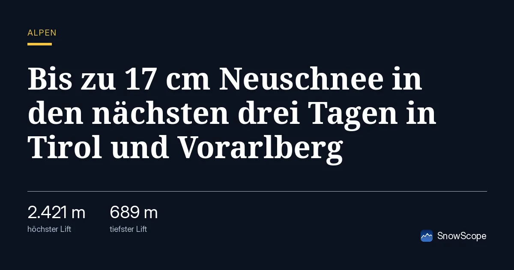

Bis zu 17 cm Neuschnee in den nächsten drei Tagen in Tirol und Vorarlberg
Am 22. November tragen alle 11 Skigebiete in Tirol und Vorarlberg Schnee auf ihren Oberhängen. Der Pitztaler Gletscher hat mit 58 cm am meisten, doch Lech/Zürs hat den meisten aktuellen Schnee mit 46 cm in den letzten drei Tagen eingefangen.
Die Live-Schneeprognose für Silvretta Montafon in der SnowScope-AppSchneehöhen, Pulverschnee-Alarme und 3D-Karte, gratis.
Was kommt: Schneeprognose bis 25. November
Zwischen jetzt und Mittwoch, 25. November, wird es in den Bergen schneien. Die Silvretta Montafon kommt mit 17 cm am meisten zu. Lech/Zürs, Ischgl, St. Anton/St. Christoph/Stuben, Damüls-Mellau und Warth-Schröcken werden jeweils rund 16 cm oder etwas weniger bekommen.
Das Timing ist wichtig, wenn du einen Skitag in der Wochenmitte planst. Der Neuschnee fällt auf kalte Lagen aus den letzten drei Tagen, was bedeutet, dass die Griffigkeit und Kantenhaftung auf den Pistenfahrten gut sind.
| Skigebiet | Schneehöhe | Neuschnee, 72 h | Erwartet, nächste Tage | Gipfel |
|---|---|---|---|---|
| Silvretta Montafon | 23 cm | 40 cm | 17 cm | 2.421 m |
| Lech/Zürs | 47 cm | 46 cm | 16 cm | 2.436 m |
| St. Anton/St. Christoph/Stuben | 41 cm | 42 cm | 16 cm | 2.642 m |
| Damüls-Mellau | 35 cm | 45 cm | 16 cm | 2.021 m |
| Ischgl | 33 cm | 36 cm | 16 cm | 2.868 m |
| Warth-Schröcken | 41 cm | 42 cm | 15 cm | 2.051 m |

Drei Tage intensiver Schneefall gerade beendet
Die Region hat erhebliche Neuschneemengen bekommen. Lech/Zürs erhielt 46 cm in 72 Stunden, gefolgt von Damüls-Mellau mit 45 cm und St. Anton/St. Christoph/Stuben mit 42 cm. Diese drei Skigebiete haben die Verhältnisse auf ihren Mittel- und Oberhängen umgestaltet.
Die Silvretta Montafon kam auf 40 cm, Warth-Schröcken und St. Anton auf je 42 cm. Auch die niedriger gelegenen Skigebiete wie Serfaus Fiss Ladis und Ischgl hatten 31 cm und 36 cm, was ausreicht, um die Hauptabfahrten zu decken.
Oberhang-Mächtigkeit jetzt: wer führt
Der Pitztaler Gletscher liegt mit 58 cm auf den Oberhängen vorn, wo die Lifte auf 3.424 m fahren. Dieses Gletscherskigebiet profitiert sowohl von der Höhe als auch vom aktuellen Schneefall. Lech/Zürs hat 47 cm bei einer Topkote von 2.436 m, was es tiefenschneetechnisch zum flachsten großen Skigebiet macht, aber reichlich mit Neuschnee segnet.
St. Anton/St. Christoph/Stuben und Warth-Schröcken berichten beide von 41 cm. Der Mittelwert über alle 11 Skigebiete liegt bei 41 cm, was zeigt, dass der aktuelle Schneefall die Verhältnisse gleichmäßig angehoben hat. Nur Serfaus Fiss Ladis (31 cm) und Silvretta Montafon (23 cm) liegen unter diesem Median, doch beide sind gut fahrbar.
Höhe zählt: wo der Schnee am mächtigsten ist
Der tiefste Schnee liegt im Hochgelände über 2.800 m. Der Pitztaler Gletscher auf 3.424 m hat 58 cm, die Oberhänge von Ischgl auf 2.868 m halten 33 cm, und Serfaus Fiss Ladis auf 2.817 m hat 31 cm. Wenn Stabilität und Bedeckung dein Anliegen sind, fahre über 2.500 m.
Niedrigere Skigebiete wie Silvretta Montafon (Topkote 2.421 m) und Damüls-Mellau (Topkote 2.021 m) haben dünnere Schneelagen, aber hervorragende aktuelle Neuschneemengen. Die Pisten knapp unter den Hauptgipfeln mischen Alt- und Neuschnee oft gut und bieten gute Kantenhaftung und Struktur, auch wenn die Gesamtmächtigkeit moderat ist.
Beste Wahl für einen Kurztrip diese Woche
Lech/Zürs verbindet Mächtigkeit (47 cm) mit dem aktuellsten Schnee (46 cm in drei Tagen). Das Skigebiet liegt im Schnittpunkt: hoch genug, um kalt und schneequalitätskonservierend zu bleiben, aber nicht so entlegen, dass die Anfahrt schwierig ist. Am Mittwoch, 25. November, wird es weitere 16 cm bekommen und die Verhältnisse fest in den Mittwinter schieben.
Fahre am Samstagmorgen los und prüfe die Straßenverhältnisse an der österreichisch-schweizerischen Grenze im Voraus. Bergpässe können das Zeitfenster für die Arlbergregion eng machen, deshalb fahre früh los und überwache Live-Verkehrsberichte.
Gelände abseits der Piste und Lawinenbulletin
Nach 46 cm Neuschnee auf stabilem Untergrund verdienen Offroutefahrten und Skitouren ernsthafte Beachtung. Die Oberhänge über 2.600 m, besonders nord-exponierte Hänge, dürften Powder bewahrt haben. Bevor du die Pistenfahrten verlässt, studiere das Lawinenbulletin für deine gewählte Zone und trage Schauffel, Sonde und LVS-Gerät.
Der Übergang von früh- zu echter Winterbedingungen bedeutet, dass die Lawinengefahr sich verschieben kann. Warme Ausaperungen und Nassschneelawinen sind jetzt unwahrscheinlich, doch Windplatten und Tiefenschwachschichten können sich in Rückengrat- und Quergelände um 2.500 m und höher bilden. Lese das Bulletin vom 24. November, bevor du gehst.
Tipps für Skifahrer
- Fahre am 24. und 25. November über 2.500 m für die mächtigste und aktuellste Schneebedeckung.
- Prüfe das Lawinenbulletin für Tirol vor jedem Offroutefahren oder Skitourenabfahren.
- Trage LVS-Gerät, Sonde und Schaufel, wenn du die Piste verlässt; die Neuschneemenge (bis zu 46 cm) reicht zum Verschütten.
- Lech/Zürs bietet den besten Kompromiss aus Mächtigkeit und aktuellem Schnee für einen Wochenmitten-Trip; plane extra Fahrtzeit Samstagmorgen ein.
- Beobachte Windplattenbildung auf Kammlayern und Quergelände, wo Neuschnee verweht wurde; diese Zonen sind am lawinengefährlichsten.
Zu diesen Zahlen
Die Schneehöhen der Skigebiete sind der meiste Schnee in den oberen Hängen am angegebenen Tag; es sind Schätzungen für eine Fläche, keine Messung an einem Punkt. Prognosen können sich ändern. Lies vor dem Freeriden immer den offiziellen Lawinenlagebericht.
Diesen Bericht zitieren
Für Forschung, Lehre oder Presse: Zahlen und Grafiken sind unter CC BY 4.0 mit dieser Quellenangabe frei nutzbar.
SnowScope (2026), Bis zu 17 cm Neuschnee in den nächsten drei Tagen in Tirol und Vorarlberg, https://snowscope.app/blog/de/2026/11/neuschnee-tirol-vorarlberg-22-november-2026.html, abgerufen am 2026-11-22
SnowScope (Atlas Labs). (2026, November 22). Bis zu 17 cm Neuschnee in den nächsten drei Tagen in Tirol und Vorarlberg. SnowScope snow reports. https://snowscope.app/blog/de/2026/11/neuschnee-tirol-vorarlberg-22-november-2026.html
BibTeX
@misc{snowscope2026neuschneetirolvorarlberg,
author = {{SnowScope (Atlas Labs)}},
title = {Bis zu 17 cm Neuschnee in den nächsten drei Tagen in Tirol und Vorarlberg},
year = {2026},
month = nov,
howpublished = {\url{https://snowscope.app/blog/de/2026/11/neuschnee-tirol-vorarlberg-22-november-2026.html}},
note = {Published 2026-11-22 11:27 UTC; accessed 2026-11-22}
}· CC BY 4.0 · Methoden, Daten und Werkzeuge →
Silvretta Montafon: Schnee und Temperatur nach Höhe, dieser Winter vs letzter (Werkzeuge) →
Silvretta Montafon folgen
Gratis: eine Nachricht, wenn Neuschnee kommt, und jeden Morgen die Vorhersage.